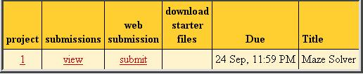

| Home |
| Syllabus |
| Schedule |
| Projects |
| Tests |
| Resources |
| Piazza |
| Submit Server |
| Grades Server |
CMSC 330, Fall 2016
Organization of Programming Languages
Project 4 Part B - Small C Interpreter
Introduction
In project 4 Part A, you parsed SmallC code. In this part, you will write an interpreter for SmallC. Your interpreter can execute the SmallC code represented as an AST, which is generated by the parser in part A.
This is a new project. If you find any error in the description or in the test files, report it to the instructor. Make sure you check the piazza announcements and errata section of the project periodically.
Getting Started
Download the following archive file p4b.zip and extract its contents.Along with files used to make direct submissions to the submit server (submit.jar, .submit, submit.rb), you will find the following project files:
- Public test input files
- Expected outputs for interpreter tests
- public_eval_assign-exp.out
- public_eval_assign1.out
- public_eval_define1.out
- public_eval_equal.out
- public_eval_exp1.out
- public_eval_exp2.out
- public_eval_greater.out
- public_eval_if-else-while.out
- public_eval_if.out
- public_eval_ifelse.out
- public_eval_less.out
- public_eval_main.out
- public_eval_nested-if.out
- public_eval_nested-ifelse.out
- public_eval_nested-while.out
- public_eval_print.out
- public_eval_test1.out
- public_eval_test2.out
- public_eval_test3.out
- public_eval_test4.out
- public_eval_while.out
- public_eval_test-assoc1.out
- Utility Code
- smallc.ml - your parser in project 4 part A.
- evaluate.ml - your interpreter
- eval.ml - uses your interpreter to execute smallC program. ( ocaml eval.ml main.c )
- Test Script - test_all.rb
- Testing instructions: README
-
SmallC Interpreter
Put your solution to this part in the to do section of file evalate.ml.
Your task is to write an interpreter for SmallC program, which in this case will be a function that evaluates a SmallC abstract syntax tree (AST).
What you will do: You will write a function eval that, given an environment and an AST, executes the SmallC function corresponding to that AST in the given environment. The type of eval is env -> ast ->env, where the first argument env is an environment, the second is the AST, and the result is an environment. The environment can be (string * value) list or (string, value_type) Hashtbl. It holds all defined variables and their values. You can use OCaml HashTbl module. When you implement your interpreter:
- Variables must be defined and initialized before they are used. Your interpreter throws exception when a variables is used before it is defined and initialized. You can do this by looking up the variable from your environment.
- A variable cannot be defined twice. Your interpreter throws exception if a variable is defined second time. You can do this by checking if a variable exists in your environment.
- Only printf statement produces output. "printf(x)" is equivalent to "printf("%d\n",x)" in C. Any SmallC code with no printf does not produce output.
Note that what you will implement for this part corresponds very closely to the operational semantics for OCaml-like programs give in lecture, so that may serve as a good reference (and this project may serve as a good way to understand that lecture better).
For example,
int main(){
int a;
a = 10;
int b;
b = 1;
int c;
c = a + b;
printf(c);
}
output is
11
Testing and Submission
We will test your project by calling your parsing and evaluation functions directly, so be sure to give those functions the types we expect, as given above. You can work on the interpreter and parser in any order, we will test each part independently.All your code for this project should be in one file, evaluate.ml. You also have to iclude the smallc.ml from your project 4A. Solution must include eval.ml, smallc.ml, and evaluate.ml. You can submit your project in two ways:
-
Submit your smallc.ml and evaluate.ml files directly to the
submit server.
-
You can submit multiple files by putting the files in a .zip archive first.
On Windows you can select the two files, then right click to
select the "Send to->Compressed (zipped) Folder" option
to create a .zip archive.
Once your files are in a single zip archive,
bring up the upload dialog box by clicking on the
submit link in the column "web submission".
Select your archive file using the "Browse" button,
then press the "Submit project!" button.
- The submit server now allows multiple files (from the same directory) to be selected. Bring up the upload dialog box by clicking on the submit link in the column "web submission". Browse to the directory containing your project files, then click on both SmallCTest.txt and SmallC.ml. Now press the "Submit project!" button.


-
You can submit multiple files by putting the files in a .zip archive first.
On Windows you can select the two files, then right click to
select the "Send to->Compressed (zipped) Folder" option
to create a .zip archive.
Once your files are in a single zip archive,
bring up the upload dialog box by clicking on the
submit link in the column "web submission".
Select your archive file using the "Browse" button,
then press the "Submit project!" button.
-
You may also submit directly by executing a Java program on a computer
with Java and network access. Use the submit.jar file
from the archive p4b.zip,
To submit, go to the directory containing your project, then either
execute submit.rb by typing:
ruby submit.rb or use the java jar directly using the following command:
java -jar submit.jar You will be asked to enter your class account and password, then all files in the directory (and its subdirectories) will be put in a jar file and submitted to the submit server. If your submission is successful you will see the message:
Successful submission # received for project 4
Academic Integrity
The Campus Senate has adopted a policy asking students to include the following statement on each assignment in every course: "I pledge on my honor that I have not given or received any unauthorized assistance on this assignment." Consequently your program is requested to contain this pledge in a comment near the top.
Please carefully read the academic honesty section of the course syllabus. Any evidence of impermissible cooperation on projects, use of disallowed materials or resources, or unauthorized use of computer accounts, will be submitted to the Student Honor Council, which could result in an XF for the course, or suspension or expulsion from the University. Be sure you understand what you are and what you are not permitted to do in regards to academic integrity when it comes to project assignments. These policies apply to all students, and the Student Honor Council does not consider lack of knowledge of the policies to be a defense for violating them. Full information is found in the course syllabus---please review it at this time.
Copyright Notice
This course project is copyright of Dr. Anwar Mamat. ©Anwar Mamat [2016]. All rights reserved. Any redistribution or reproduction of part or all of the contents in any form is prohibited without the express consent of the author.